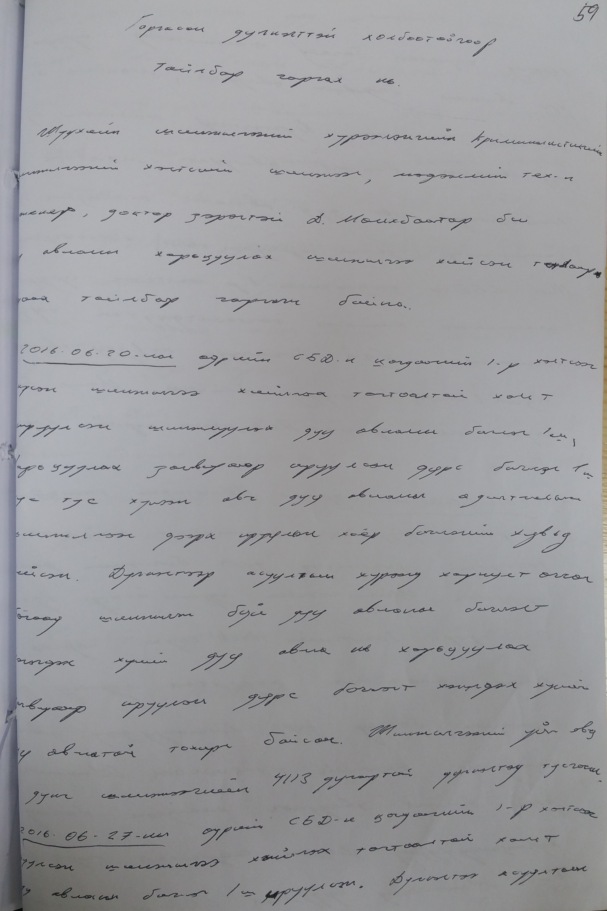
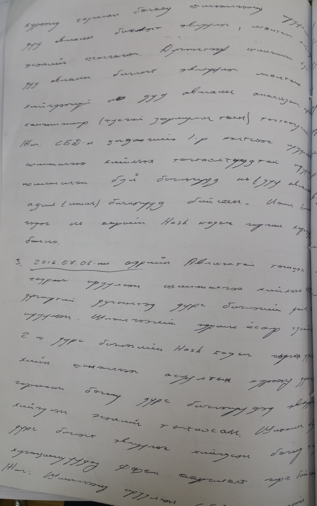
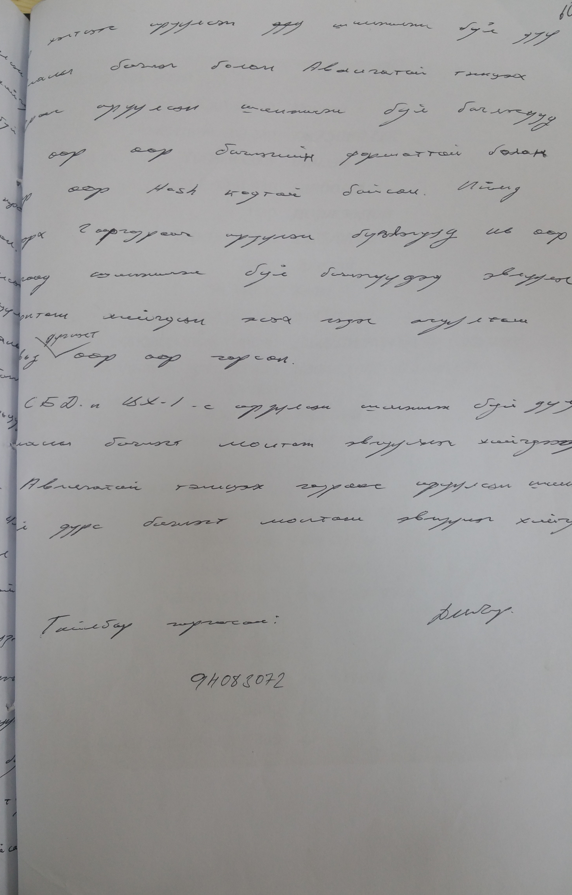

АТГ-204 хавтаст хэргийн 59-60-р хуудас
ГАРГАСАН ДҮГНЭЛТТЭЙ ХОЛБООТОЙГООР ТАЙЛБАР ГАРГАХ НЬ
Шүүхийн шинжилгээний хүрээлэнгийн Криминалистикийн хэлтсийн шинжээч, мэдээллийн технологийн инженер, доктор зэрэгтэй Д.Мөнхбаатар би дуу авианы харьцуулах шинжилгээ хийсэн талаарх дараах тайлбар гаргаж байна.
1. 2016.06.20-ны өдрийн СБД-н Цагдаагийн 1-р хэлтсээс ирсэн шинжилгээ хийлгэх тогтоолтой хамт ирүүлсэн шинжлүүлэх дуу авианы бичлэг 1 ш , харьцуулах загвараар ирүүлсэн дүрс бичлэг 1 ш тус тус хүлээн авч дуу авианы адилтгалын шинжилгээг дээрх ирүүлсэн хоёр бичлэгийн хувьд хийсэн. Дүгнэлтээр асуултын хүрээнд хариулт өгсөн бөгөөд шинжилж буй авианы бичлэгт ... хүний дуу авиа нь харьцуулах загвараар ирүүлсэн дүрс бичлэгт ... хүний дуу авиатай тохирч байсан. Шинжилгээний үйл явц, дүнг шинжээчийн 4113 дугаартай дүгнэлтэд тусгасан.
2. 2016.06.27-ны өдрийн СБД-н Цагдаагийн 1-р хэлтсээс ирүүлсэн шинжилгээ хийлгэх тогтоолтой хамт дуу авианы бичлэг 1 ш ирүүлсэн . Дүгнэлтээ асуултын хүрээнд гаргасан бөгөөд шинжилгээнд ирүүлсэн дуу авианы бичлэгт эвлүүлэг, монтаж хийгдсэн эсэхийг шалгасан. Дүгнэлтээр шинжилж буй дуу авианы бичлэгт эвлүүлэг монтаж хийгдээгүй нь дуу авианы анализын програм хангамжаар (тусгай зориулалтын) тогтоогдсон. Жич: СБД-н Цагдаагийн 1-р хэлтсээс ирүүлсэн шинжилгээ хийлгэх тогтоолуудтай ирүүлсэн шинжилж буй бичлэгүүд нь дуу авианы адил (ижил) бичлэгүүд байсан. Ижил бичлэг гэдэг нь өөрийн Hash кодыг гарган харьцуулсан болно.
3. 2016.07.06-ны өдрийн Авлигатай тэмцэх газраас ирүүлсэн шинжилгээ хийлгэх 4374 дүгнэлтэд дүрс бичлэгийн файл 2 ш ирүүлсэн. Шинжилгээний журам ёсоор тухайн 2 ш дүрс бичлэгийн Hash кодыг гаргаж үз-хийн шинжилгээг асуултын хүрээнд дүгнэлт гаргасан бөгөөд дүрс бичлэгүүдэд эвлүүлэг хийгдсэн эсэхийг тогтоосон. Шинжилж буй дүрс бичлэгт эвлүүлэг хийгдсэн бөгөөд тодорхой хугацаануудад фазын өөрчлөлт гарч байсан. Жич: Шинжилгээнд ирүүлсэн СБД-н Цагдаагийн 1-р хэлтсээс ирүүлсэн шинжилж буй дуу авианы бичлэг болон Авлигатай тэмцэх газраас ирүүлсэн шинжилж буй бичлэгүүд өөр өөр бичлэгийн форматтай болон өөр өөр Hash кодтой байсан. Иймд дээрх 2 газраас ирүүлсэн бичлэгүүд нь өөр бөгөөд шинжилж буй бичлэгүүдэд эвлүүлэг монтаж хийгдсэн эсэх гэдэг асуултын хувьд дүгнэлт өөр өөр гарсан.
СБД-н ЦХ-1-с ирүүлсэн шинжилж буй дуу авианы бичлэгт монтаж эвлүүлэг хийгдээгүй. Авлиагатай тэмцэх газраас ирүүлсэн шинжилж буй дүрс бичлэгт монтаж эвлүүлэг хийгдсэн.
Тайлбар гаргасан: гарын үсэг /Д.Мөнхбаатар/


